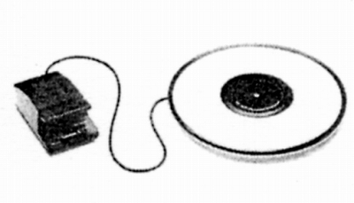

その他の製品
VS-100

■価格 48,000円■備考 全面吸着型ディスク・スタビライザーテクニカのAT666ベースのOEMか？サイド吸引式。TX-1000用オプション。なお通常のラバーマット（TM-100）も\5,000で販売されていた。
注 吸着型ディスク・スタビライザーは、エッジのゴムの状態に性能が強く左右されます。中古で購入する場合、経年劣化は前オーナーの使い方・環境によりかなり差があると思います。ご注意ください。
ナカミチのインデックスへ